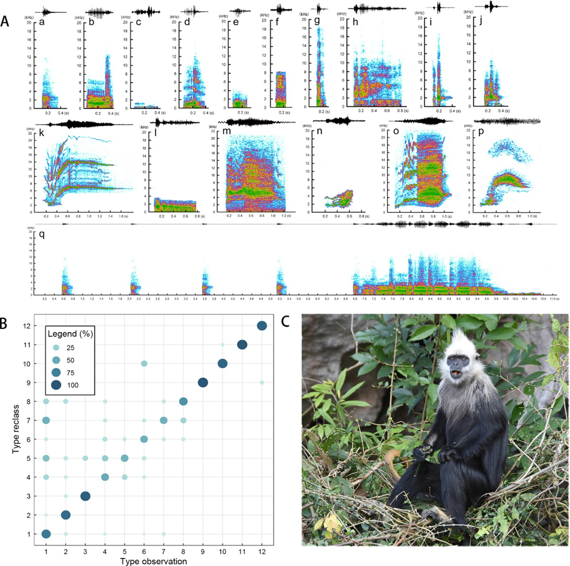

声学特征
- 白头叶猴大部分叫声没有谐波、频率较高、带宽较大。
- 白头叶猴至少能发出17种叫声，其中成年个体叫声有11种，存在性别特异性。
- 成年雄性特有叫声5种，成年雄猴作为家庭群的首领，会发出三种专属叫声：脉冲声、激动鸣叫声和低吼声，用于抵御外来雄猴入侵或宣示领地主权，这些声音常伴随肢体行为（如奔跑、摇晃树枝），传播距离可达500米以上，且三种叫声常组合使用，类似人类语言的“句子结构”。

基于RNNoise的濒危灵长类生态监测与降噪系统
声学特征

雌猴与幼猴的群内交流
成年雌猴和青少年猴会根据威胁等级调整警报声：低威胁时使用双音节警报声，高威胁（如捕食者靠近）则发出三音节警报声，这种分层响应机制有助于群体高效避险。
队长
电子与通信工程学院
队员
电子与通信工程学院
队员
电子与通信工程学院
队员
电子与通信工程学院
队员
电子与通信工程学院
叶猴声音降噪绝非简单的“技术清洗”，而是打通生态数据价值链的关键环节——从噪声中挖掘出生物行为的真相，让科技真正服务于自然保护。项目若能结合具体保护场景（如针对保护区痛点），我们坚信这个项目将为守护濒危物种的做出不可磨灭的贡献!
数据来源: 中国广西崇左白头叶猴国家级自然保护区,(一般基于猴王的叫声, 因其余白头叶猴的发声机会较少, 且难以人为捕捉)